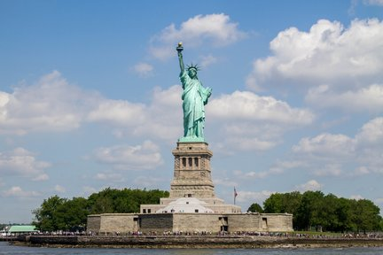
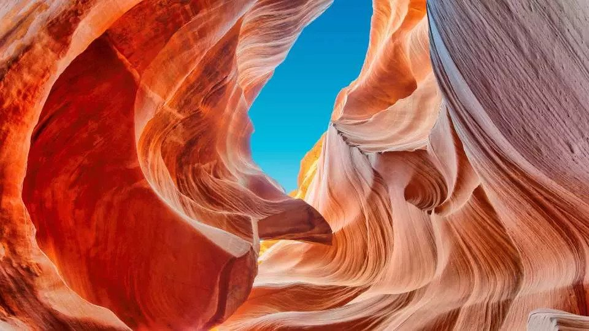
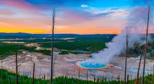

自由女神像（Statue of Liberty）
自由女神像位於美國紐約港的自由島，是美國象徵自由與民主的地標。1886年由法國贈送美國，作為兩國友誼的象徵。高46公尺的青銅雕像手持火炬，象徵照亮世界的自由之光，腳下的斷鏈代表擺脫壓迫與奴役。遊客可搭船前往自由島參觀，登上基座俯瞰紐約市區與港口景色。自由女神像不僅是旅遊勝地，也是歷史與文化教育的重要象徵，每年吸引數百萬遊客前來朝聖。

大峽谷（Grand Canyon）
大峽谷位於美國亞利桑那州，是世界著名的自然奇景之一，由科羅拉多河長期侵蝕形成。峽谷長約446公里，深度超過1,800公尺，展現壯觀的地質地貌與彩色岩層。遊客可以沿著南緣或北緣步道欣賞壯麗景觀，還可參加直升機遊覽或漂流活動，感受峽谷雄偉氣勢。大峽谷國家公園於1919年設立，保護自然生態與地質資源，成為戶外探險和攝影愛好者的天堂，也是世界自然遺產的重要景點。

黃石公園（Yellowstone National Park）
黃石公園位於美國懷俄明州、蒙大拿州及愛達荷州交界，是世界第一座國家公園，成立於1872年。公園以壯觀的地熱景觀著稱，包括間歇泉、熱泉、泥火山和硫磺池，最著名的老忠實泉每隔一定時間噴發，吸引大量遊客觀賞。園內還有豐富的野生動物，如灰熊、野牛和麋鹿，提供觀察生態的機會。黃石公園結合地質奇觀與自然生態，被譽為自然愛好者和探險家必訪的美國經典景點。

科羅拉多州阿斯彭（Aspen, Colorado）
阿斯彭位於美國科羅拉多州洛磯山脈，是世界知名的高級滑雪度假小鎮，冬季特色尤為突出。這裡擁有四大滑雪場，雪質乾燥細緻，被譽為北美頂級滑雪勝地之一，吸引眾多專業選手與名人造訪。除了滑雪與雪地活動，阿斯彭冬天的白雪山景、木屋小鎮與溫暖壁爐營造出濃厚的度假氛圍。小鎮內還有高級餐廳、藝術展覽與音樂活動，結合自然與人文魅力。阿斯彭不僅是冬季運動天堂，更代表奢華、浪漫與高山雪國風情，是冬季旅遊的夢幻目的地。
好萊塢（Hollywood）
好萊塢位於美國洛杉磯，是全球電影與娛樂產業的中心。好萊塢標誌性的山頂白色字母「HOLLYWOOD」吸引無數遊客拍照留念。這裡聚集著電影製片廠、明星大道和博物館，是電影愛好者探索影視文化的聖地。遊客可參加導覽行程，走訪名人手印廣場，或參觀電影拍攝現場，體驗電影產業的魅力。好萊塢不僅是美國娛樂文化的象徵，也代表全球流行文化和創意產業的發源地，吸引世界各地旅客慕名而來。